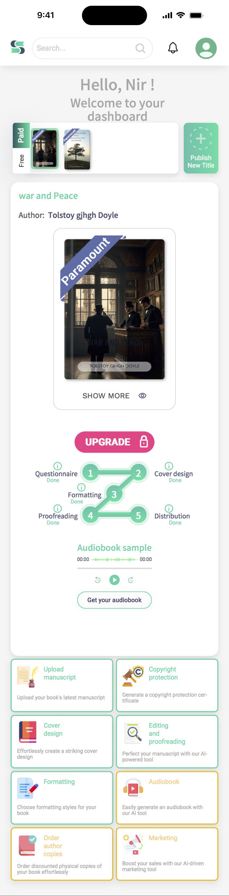

Spines - Mobile Dashboard Redesign
- Company
- Spines
- Role
- Product Designer
- Platform
- Mobile
The Spines author dashboard brings together book status, production progress, and publishing tools. I redesigned its mobile experience to make a complex publishing journey easier to understand and act on.
Before
One dashboard tried to do everything
The dashboard as it existed, captured end to end — one continuous scroll, shown here at full length.

440 × 1,713 px — one continuous scroll
What existed
One scrolling view carried everything at once: switching between books, the current book, upgrade messaging, a five-stage production tracker, audiobook playback, and an eight-tile grid of publishing tools.
What was not working
- The upgrade button carries the strongest visual emphasis on the screen, ahead of the author's current stage and next action
- The production stepper is too small and compressed to communicate progress clearly
- The audiobook sample interrupts the main journey, sitting between the production tracker and the tools
- Cover design, formatting, and proofreading each appear in both the production stepper and the tool grid, and the audiobook appears once as an inline sample player and again as a separate tool tile
What needed to be preserved
Book context, progress visibility, and tool access all still mattered and had to survive the redesign. What had to go was the duplication — and a flat hierarchy that gave an upgrade prompt greater visual weight than the next production step. The fix was to keep all three, remove the repeats, and let the hierarchy change with each publishing state.
What needed to change
Turn one overloaded screen into a state-based experience
The previous dashboard was a compressed version of the web experience — most of the same information, reduced to fit a smaller screen. The challenge was not to add states. It was to decide what to remove, and to organize what remained around what an author needs at each stage.
Separate the states
A library, a book in production, and a published book are three different situations. One layout could not rank all three at once.
Make the next step obvious
Each state leads with a single action tied to the current stage, so the next move is never something the author has to look for.
Keep tools available, but secondary
The publishing tools stay one tap away in a persistent bar instead of repeating work already shown in the progress area.
Final design
A dashboard that changes with the publishing journey
The same dashboard resolves differently depending on where the book is.
From the library to the next required action
1 · Library

Library
The library gives authors a clear entry point across their titles, with each book's status visible at a glance.
- Clear book status and direct entry from the library
2 · In Progress

In Progress
Once a book is active, the dashboard shifts its focus to the current production stage: one primary action shows what needs to happen next, while a vertical timeline keeps the full publishing process visible.
- One primary action tied to the current production stage
- A step-by-step timeline keeps progress visible without leaving the screen
- Secondary tools remain accessible without competing with the current task
State 3: Published
From production to growth
Once a book is live, production is done and the dashboard reflects that. The interface shifts focus entirely: retail channels, marketing tools, and the author's next move. The same screen that tracked progress now points forward toward growth and the next project.
- Direct links to Amazon and other retail channels
- Marketing tools surfaced at the point of publication
- Surfaces the author's next move: upsell, marketing, or starting another book

Outcome
An approved direction for the mobile experience
The redesign established an approved product direction for the mobile author experience. The three-state model replaces a static single-view dashboard with one that reflects where the author actually is in the publishing journey, rather than showing the same information at every stage.